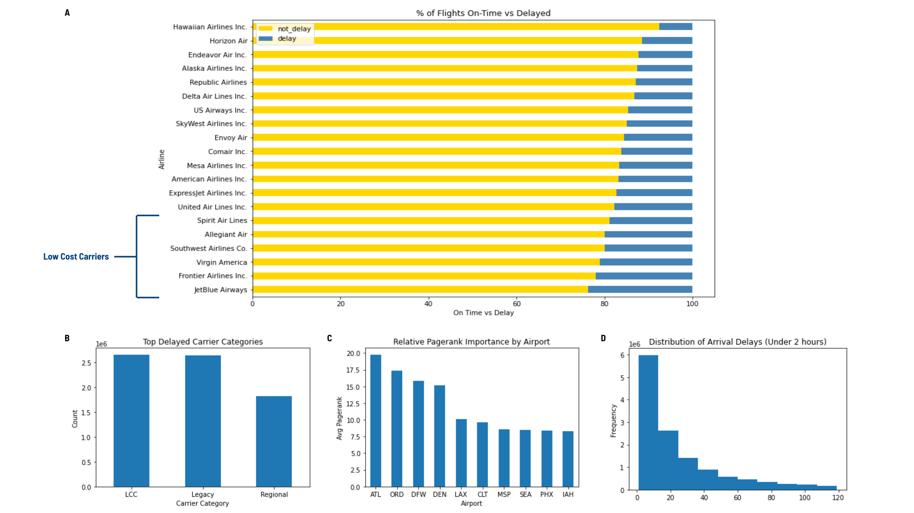

Domestic Flight Delay Predictions At Scale
Machine Learning, Big Data | PySpark, Databricks
August 2022

Introduction
Flight delays are a widespread issue worldwide, and can cause financial losses, the dissatisfaction of passengers, time losses, loss of reputation and bad business relations (Zámková et al.). In the post-COVID world, travel demand increases, but supply, in the form of airport staffing, pilots, etc., struggles to keep up. Therefore, it is more important than ever for airports to be able to predict flight delays in order to help reduce strain on the air travel system.
The goal of this project is to help airports with their operations by predicting flight delays, so the airports can be strategic with turnaround services such as aircraft refueling, restocking, baggage handling, air traffic control, and gate management. Using US domestic flight and weather data from 2015 to 2021, along with airport information, we predict departure flight delays two hours prior to planned departure time.
Evaluation Metrics to Measure Success
We use F2-score, Matthews Correlation Coefficient (MCC), and balanced accuracy to evaluate our models' performance. These evaluation metrics are chosen to align with the business needs of our project.
F2-score is a weighted harmonic mean of precision and recall, and it gives more weight to recall than to precision, which means false positives are considered not as bad as than false negatives. If a flight that is predicted to be delayed depatures on time (false positive), the airport will not have a substantial monetary loss, whereas if an actual delay is failed to be identified (false negative), it will have a cascading effect on subsequent flights, baggage handling, air traffic control, and gate management for the airport.
Matthews Correlation Coefficient (MCC) represents the confusion matrix as a single number, and helps with imbalanced data. MCC takes into account the proportion of each class. This metric ranges from -1 to 1, and -1 indicates the model is predicting the opposite class from the actual value, 0 is similar to random guessing, and 1 indicates a perfect classification.
Balanced Accuracy: Since the data is imbalanced, a normal accuracy metric will be high just by predicting the majority class, which is misleading. Instead, we choose to use balanced accuracy, which takes into account different class sizes.
Skills
Machine Learning At Scale
Tools
Python, PySpark, Databricks
Datasets
The primary datasets are domestic flight and airport information data from the U.S. Department of Transportation (DOT), weather data from the National Oceanic and Atmospheric Administration repository, and weather stations data from the U.S. DOT. The flight dataset contains information about domestic passenger flights on-time performance between 2015 - 2021. There are 107 features, of which the DEP_DEL15 (departure delay 15 minutes or more) is the target variable. The weather dataset contains hourly weather condition information from 2015 - 2021. The weather station dataset contains weather stations' information and neighboring stations along with distance between stations.
To supplement, we used airline codes, holidays, and airline operation category datasets. The airline codes data provides airline names and associated IATA and ICAO codes. The holidays data lists holiday travel seasons as defined by the air travel industry. The airline operation category data categorizes airline carriers by their operation cost structures.
Exploratory Data Analysis (EDA)
- Flight Dataset This dataset contains information about domestic passenger flights on-time performance between 2015 - 2021. There are 107 features, of which the DEP_DEL15 (departure delay 15 minutes or more) is the target variable. DEP_DEL15 = 0 indicates that the flight is not delayed and DEP_DEL15 = 1 represents delayed flights. Based on EDA on a subset of 3 month flight data, around 3% of data is missing DEP_DEL15 feature, which indicates flight cancellations. We consider these indefinite delays. Around 30% of flights in the flight dataset depart delayed, suggesting significant class imbalancing issue.
- Weather Dataset This dataset is collected from National Oceanic and Atmospheric Administration repository, with granular, high frequency weather information from monitoring weather stations all over the U.S. The dataset contains a large number of missing values, and columns with greater than 70% missing data are removed.
- Station Dataset This dataset contains information of weather stations and distances between neighboring stations. Stations with distance_to_neighbor = 0 represent weather monitoring stations at the airport, and only these stations are retained.
In addition, the flight dataset contains 50% duplicated records, which are removed.
According to the Federal Aviation Administration, inclement weather, including thunderstorms, snowstorms, wind shear, icing, and fog, creates potentially hazardous conditions in the nation's airspace system. These conditions are, by far, the largest cause of flight delays. In an average year, inclement weather is the reason for nearly 70% of all delays. We thoroughly analyze the features in the weather data, and only features that are indicators of inclement weather are retained.
Join Datasets
For all datasets, columns containing greater than 70% missing data are removed. All datasets are cleaned before joining. Flight dataset contains 42,430,592 records. Weather dataset contains 3,056,388 records, and station dataset contains 16,689 records.
Joining dataset is performed with the following join criteria: flight dataset left join with station dataset and left join with weather dataset on ICAO code in flight dataset = ICAO code in station dataset, on station id in station dataset = station id in weather dataset, on year in weather dataset = year in flight dataset. The following filtering criteria are followed: the difference between flight UTC timestamp and weather dataset timestamp should range between 2 (inclusive) and 5 hours prior flight departure time. The weather data is aggregated within a two hour window prior to prediction time. Depending on the weather features, aggregation can be average (i.e., rain fall volume), maximum (i.e., wind speed), or minimum (i.e., visibility). The flight UTC timestamp should always be greater than weather data timestamp.
Feature Engineering
| New Feature | Description | Data Type |
|---|---|---|
| Carrier Category | There is a clear trend that certain airlines have higher percentage of delayed flights. Many of these airlines are considered low cost (JetBlue) or ultra-low cost (Spirit, Frontier) carriers while other airline carriers have fewer percentage of delayed flights. This new feature categorizes airlines into carriers. (Figure 1A, 1B) | categorical |
| Holidays: Pre- and Post-Holiday | Airline travel can be seasonal, and certain holidays have much heavier traffic. We create 3 binary indicators to indicate whether flight depature dates are a holiday, pre-holiday, or post-holiday. | binary |
| Airport Importance (PageRank) | Certain airports can be considered "travel hubs" and have more activities (and hence potentially more delays) than others. We use pagerank to find the importance of each airport, creating a new feature to indicate the importance of each flight's origin airport (i.e., how busy the airport is). (Figure 1C) | numerical |
| Prior Flight's Late Arrival | We believe there is a chaining effect of late arriving flights causing future delayed flights, and we hypothesize that this has the largest impact on flight departure delays. By tracking each flight's tail number, we create a binary feature that indicates whether the plane was arrived late prior depature. Based on our research, there can be room to "make up" for late arrival; therefore, only flights arriving late for more than 30 minutes are considered late enough to affect the next flight depature time. (Figure 1D) | binary |
Figure 1. New features

Model Pipeline
Model Performance
Challenges and Future Opportunities
See the complete project in my GitHub repository.